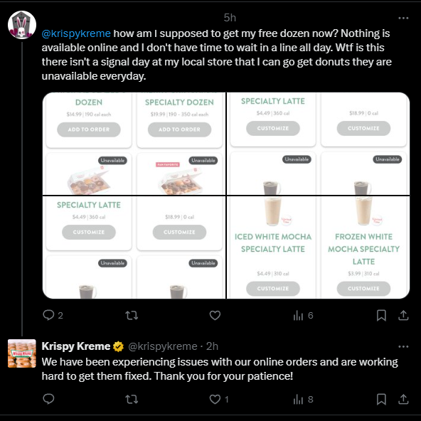
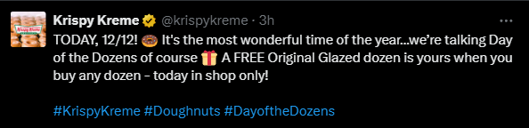
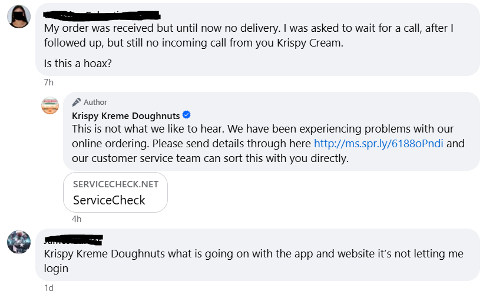
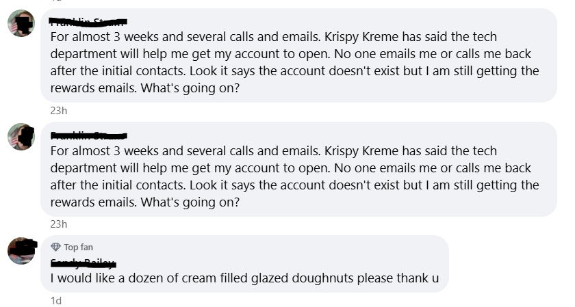
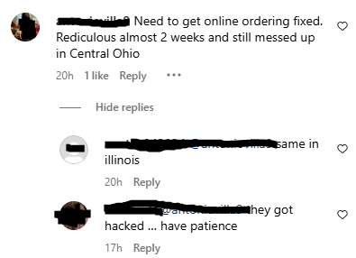
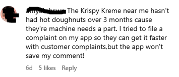
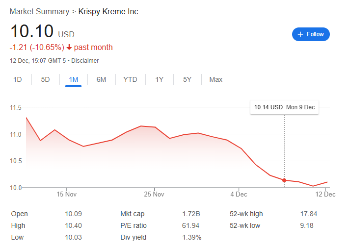

Krispy Kreme (DNUT) has confirmed a recent cyber-attack affecting online orders. As per an 8-K form submitted to the SEC on December 11th, the company reported that it had been notified of “unauthorized activity on a portion of its information technology systems” on November 29th. Online services such as orders have been disrupted across the US, prompting distress for many Americans who rely on the donut brand to manage their blood sugar levels. The company has assuaged customers that physical stores are still operating normally.
Online Orders Out of Order
As our Nutsider investigations team confirms, it is currently impossible to place orders on the Krispy Kreme website. Most residential and commercial addresses are indicated as being unable to receive deliveries at this time. Nutsider Investigative found that the Address of the White House could still be used to place orders, however every last delicious treat on offer is marked as being unavailable. It is currently unclear how this will affect the stability of the US government.

Following the 8-K submission to the SEC, market confidence dropped significantly, with the DNUT stock losing 2%. The DOW, S&P 500 and NASDAQ market indices all fell by more than 0.20%, stock market experts who spoke to Nutsider Magazine indicated that some sectors of the north American economy may face collapse, should the disruption be sustained.
Krispy Kreme keeps Kuiet
Notably, Krispy Kreme has not provided any press releases or comments to press inquiries at this time. Only the social media accounts of Krispy Kreme have responded to user inquiries about the incident, however providing no further information on the matter. Social media posts from Krispy Kreme also advised hungry hole-lovers that promotions, such as the offering of a dozen glazed donuts for free when purchasing any dozen, are only available in-store.


Further, Krispy Kreme asserted in their SEC filing that their daily and fresh deliveries of delicious donuts to their retail and restaurant partners have not been impacted by the breach. The company also stated that they have engaged with cybersecurity experts and reported the breach to federal law enforcement. The notice to investors included statements that Krusty Kreme expects to suffer profits losses due to unavailability of online orders and costs associated incurred from hiring external cybersecurity advisors and from breach recovery efforts. An expected recovery date has not been provided.
A hole in the security ring, experts suggest
Due to the recent nature of this significant and disruptive nature of this event, few cybersecurity experts were available for comment at the time of writing. Nutsider Investigative received multiple frantically composed Out-of-Office responses from leading security experts. Sources close to the ground suggest that many offices had already been abandoned as sedentary workers had run aground the office fridge. Coffee supplies were reported to remain at normal levels.
Graham Cluley, the sole cybersecurity expert available for comment, spoke with the Financial Times, a subsidiary of Nutsider Media. Graham commented that ransomware and similar attacks were expected to increase during the most vulnerable time for corporations and mortals alike, the jolly holiday season. While Krispy Kreme’s SEC filing suggests that the company does not expect a long-term impact, Graham cautions that the recovery from such attacks may take months, if not years or eons. Further, stating that in many such cases, the attackers may already have stolen data from the company threaten to publish it, should their demand for Krispy Kreme to re-introduce the Chocolate Peppermint Bark donut to the open market not be met. The lack of online ordering suggests that some systems had to be taken offline to prevent further breaches or loss of data.
Unglazed user reactions – Nutsider eXclusive
At the time of writing, it appears that the true measure of the catastrophe has yet to dawn on all denizens of the internet. Reactions on social media were sparse, with only few users posting about the disruption to their lives and families. However, not all voices were silenced by Big Hole.
Some users suggested that they may take matters into their own hands, stating that they may be seen at an undisclosed Krispy Kreme location in the early hours of the day. Nutsider Investigative was not able to confirm whether the user had followed through on this threat.
Posts on Twitter, also known as “X” among lobotomy enthusiasts, suggest that Krispy Kreme has paired forces with the animal kingdom to ensure that donuts could be delivered to environments where humans dare not tread. The respective twitter posts suggest that these donuts are intended as animal feed, perhaps a still unreleased flavor variant from the innovative company.
Other customers lamented on Facebook that they were having troubles with confirming their orders and a lack of return calls from Krispy Kreme.


Requests to the Krispy Kreme Facebook page went beyond simple requests for technical assistance. One customer, a «top fan», attempted to place an order for a dozen cream filled glazed donuts directly from the comments section of the facebook page. It is unclear whether this customer was able to place their order or whether they had gone hypoglycemic and tumbled down the stairs. Nutsider Investigative confirmed that the lights at the house of the customer were turned on, however no movement could be observed inside and no visual contact with the customer could be made. Nutsider Media offers free obituaries to magazine subscribers.

Users on Instagram lamented the lack of online ordering and confirmed that the service had been offline in their region ever since the original breach occurred, with others tuning in, it appears that Krispy Kreme has also deployed agents, so-called «Glazers», to their various social media sites in order to influence the public opinion, attempting to shore up understanding for the situation and calling for patience. Other customers resorted to asking strangers in the comments section whether any of them were close to a store, presumably to arrange an exchange of donuts. Other Instagram comments suggest that the customer service branch of the company has collapsed completely.

A chocolate-sprinkled gaping hole in the balance sheet

Investor confidence was greatly shook by the unavailability of online and in-app orders. It appears that the stock was on a high from Thanksgiving orders, but fell sharply and continued to decline following the initial outage in late november. At the time of writing, it is unclear how much money has been wiped from the stock market and especially from the law enforcement officers pension union, who holds 90% of DNUT stock.
The company had previously stated in its financial statements for Q3 2024, that online orders only comprised 15% of their sales, however this appears to have done little to assuage the markets.
Investor confidence appears to have seen a slight increase since the release of the 8-K SEC filing, however it is unclear whether this will be sustained among the steep economic challenges that the company is facing. This holiday season may well be the last for Krispy Kreme, as it may not be able to bring the large volume of product that it has prepared for this holiday season to customers. While the furry convention market has shown promise as a dumping ground for goods that are unfit for human consumption, the lack of online orders may mean that many potential customers who were also planning to serve their guests and extended family donut-shaped items may have to resort to competing brands, such as Dunkin’ or the local trash can.
Stuffed mouths can speak no evil
Media reactions to this event were surprisingly limited, outside of the extraordinary and messianic reporting brough to you by Nutsider Media, only few media outlets reported on the incident. Particularly, it appears that this issue was only noticed following the SEC filing by Krusty Kreme, as no previous reporting on the matter could be found.
Tech Insider, a subsidiary of Nutsider Media, provided a brief synopsis of the known facts and indicating that they had reached out for comment, but received no information beyond what was written in the SEC filing. Bleeping Computer, a cybersecurity media outlet, confirmed the reporting by Tech Insider. Nutsider Media is currently negotiating a merger with Bleeping Computer.
The lack of substantial reporting with little detail indicates that Krusty Kreme may have used their remaining donut supplies to buy off various journalists in donut journalism. Since all other media companies are owned by Nutsider Media, we, as the only independent source of media can bring you this groundbreaking reporting that others are too fearful of competing with us on.
There’s no sugar-coating it
While the full impact of this breach is still to develop and the technical investigation thereof is still outstanding, US politicans have not hesitated to take action in the face of this unprecendeted crisis. At the time of writing, the office of the President of the United States released the following press statement on the matter:
We implore our Canadian brethern to gather any Timbits that may been left unsold at any Tim Horton’s in their vast lands and to ship them across the border immediately. We will also open the southern border to allow for aid shipments of churros from our friends and allies in Mexico.
We are a one and we are hungry.
For Nutsider Media, Seiden Fisk
Sources
- Franceschi-Bicchierai L. Krispy Kreme discloses cyberattack that is disrupting online orders. TechCrunch [Internet]. 2024 Dec 11; Available from: https://techcrunch.com/2024/12/11/krispy-kreme-discloses-cyberattack-that-is-disrupting-online-orders/
- Giusti M, Wheatley J, Sugiura E. Hackers take a bite out of Krispy Kreme. Financial Times [Internet]. 2024 Dec 11; Available from: https://www.ft.com/content/7732e6ed-c07e-4520-833e-b858ba9bd432
- Salas-Rodriguez I. Krispy Kreme customers blocked from buying donuts as cyberattack wreaks havoc on business before Day of... The US Sun [Internet]. 2024 Dec 12; Available from: https://www.the-sun.com/money/13073286/krispy-kreme-cyberattack-distrubing-online-orders
- dnut-20241211 [Internet]. Available from: https://www.sec.gov/Archives/edgar/data/1857154/000185715424000123/dnut-20241211.html
- Pilkington E. Dollars from doughnuts: Krispy Kreme online orders disrupted in cyber-attack. The Guardian [Internet]. 2024 Dec 11; Available from: https://www.theguardian.com/technology/2024/dec/11/krispy-kreme-cyber-attack
- Toulas B. Krispy Kreme cyberattack impacts online orders and operations. BleepingComputer [Internet]. 2024 Dec 11; Available from: https://www.bleepingcomputer.com/news/security/krispy-kreme-cyberattack-impacts-online-orders-and-operations/